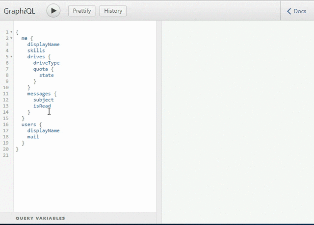
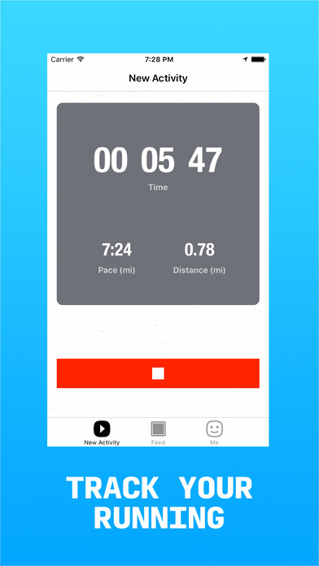
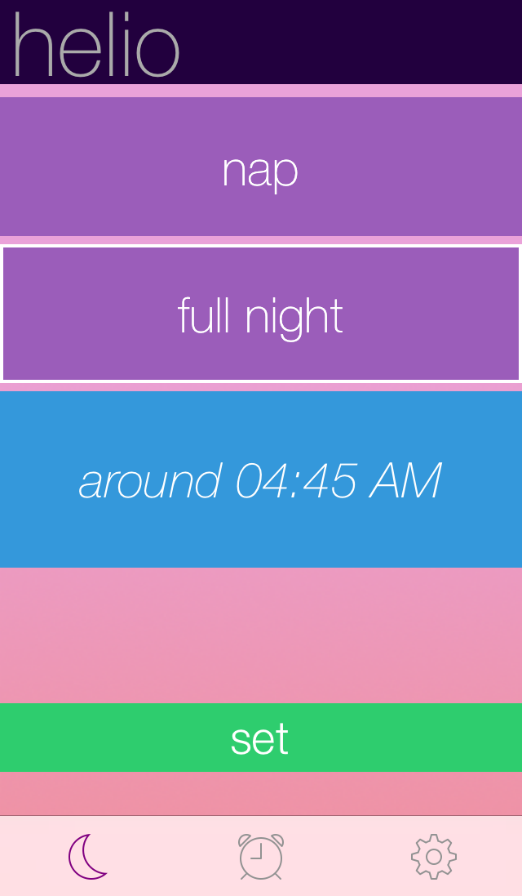

Tapioca - API Helpdesk
- Built platform that enables platform owners to better support API integrators
- Developed a custom OpenAPI 3.0 parser to automatically analyze request bodies for correctness, suggest changes
- Built service, admin console web app, support web app and SDKs
- Do you maintain an API? Join the beta
GraphQL for Microsoft Graph

- Developed novel means of generating GraphQL service from OData service description
- Implemented translation of OData API descriptions into GraphQL schema (collection mechanics, type annotation, entity inheritance)
- >70 stars, >10 forks, used by >20 projects on GitHub
4EJ - Google Maps for Infographics

- Designed, built and shipped web app & service for sharing and exploring longform content (documents, infographics, etc)
- Developed mechanisms for clustering related information
- Built using React, Node.js and MongoDB
- Explore in 4EJ
Grassroots - Local Political Discussion


- Designed, built and shipped an iOS app for enabling political discussion among people who share a common congressional district
- App built with Swift 3, backend built using Node.js/Express, MySQL and Redis
- Available on the App Store
Cardiyo - Social Run Tracking


- Designed, built and shipped a social run tracking app that allows users to share running experiences (courses, photos, captions) vs just stats
- Wrote iOS app in Swift 3, backend using Node.js/Express, MySQL
- Available on the App Store
206 Neighborhoods

- Shipped a web app that makes it easy for prospective renters/home buyers to research and compare Seattle neighborhoods in terms of schools, public facilities and public/property safety
- Built a backend in Node.js for proxying service-to-service queries to Seattle Open Data SoQL APIs, aggregating relevant data and resolving locations in a variety of formats
- See it live
- GitHub repo
Wedge Analytics - iOS App Insights
- Built a proof-of-concept analytics framework for tracking deep link schemes on device
- Demo
Bottle - Hyperlocal Photo Sharing


- Designed, developed and shipped iOS app for sharing pictures with people around you (like Snapchat for places)
- Built out image submission flow, local image feed, direct messaging among other experiences - Worked with multiple web APIs, MapKit, background uploading, asynchronous content loading
Helio - Predictive Alarm Clock

- Shipped an iOS app for passive sleep tracking
- Developed algorithm for adjusting wake time based on qualitative user input